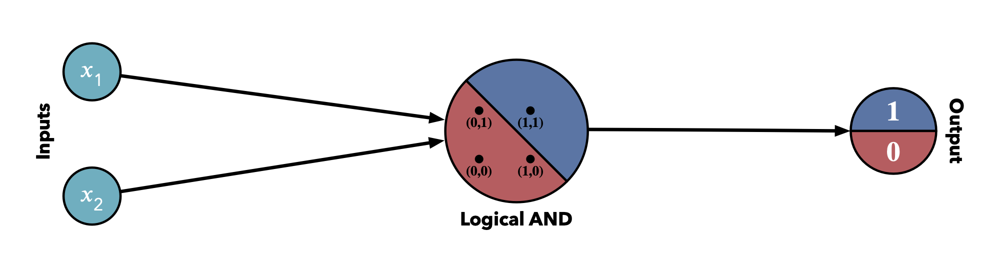

Perceptron Algorithm¶
Overview¶
The perceptron algorithm is a form of supervised learning which is used for binary classifiers. It is heavily used in deep learning, as it forms the basis for neural networks. Binary classification typically concerns yes/no type of questions, like:
Did the student pass the exam?
Did the patient recover?
Did the online shop visitor convert?
A simple example with a variable \(x_1\) and a variable \(x_2\) is plotted in the below graph. The label \(y\) is depicted by the color of the dots, \(\color{#4c72b0}{\textbf{blue}}\) and \(\color{#c44e52}{\textbf{red}}\). What we are typically trying to achieve with binary classifier algorithms is to find the line which best divides the two classification outcomes (e.g. the \(\color{#8172b3}{\textbf{purple}}\) line below).
Note
In is best practice to convert any the label to numeric values before running any machine learning algorithms on them. If the label in the dataset would for example contain the string values “\(\color{#4c72b0}{\textbf{blue}}\)” and “\(\color{#c44e52}{\textbf{red}}\)”, we should map those to become \(0\) and \(1\). If we don’t do this explicitly, then the machine learning algorithm will map random float values for the label, which may still work, but could make the summary reports harder to understand/less predictable.
Boundary Line¶
In binary classification, the line which best divides the points in a dataset considering label \(y\) is called the boundary line. The goal of a binary classification algorithm is to find the optimal boundary line.
If we again take the simple example of two variables \(x_1\) and \(x_2\) and the label \(y\) then the boundary line will be depicted by the formula:
\(w_1x_1 + w_2x_2 + b = 0\)
Or abbreviated in vector notation:
\(Wx + b = 0 \text{, where:} \\ W = (w_1, w_2) \\ x = (x_1, x_2)\)
The label we refer to as:
\(y = \text{label: }0 \text{ or } 1\)
And the prediction would be:
\(\hat{y} = \left\{ \begin{array}{ll} \color{#4c72b0}{\textbf{1}} \text{ if } Wx + b \geq 0 \\ \color{#c44e52}{\textbf{0}} \text{ if } Wx + b < 0 \end{array} \right.\)
Higher Dimensions¶
Extrapolating the above 2-dimensional example to higher dimensions, will make it impossible to visualize, like we did with the line example above, but it doesn’t change much when it comes to the math involved. Instead of dealing with 2-dimensional space: \(x_1\) and \(x_2\), we would be dealing with n-dimensional space: \(x_1, x_2, \ldots , x_n\)
The boundary would be described by an \(n-1\)-dimensional hyperplane:
\(w_1x_1 + w_2x_2 + \ldots + w_nx_n + b = 0\)
This wouldn’t change the vector notation:
\(Wx + b = 0 \text{, where:} \\ W = (w_1, w_2, \ldots, w_n ) \\ x = (x_1, x_2, \ldots, x_n)\)
The label we still refer to as:
\(y = \text{label: }0 \text{ or } 1\)
And the prediction would still be:
\(\hat{y} = \left\{ \begin{array}{ll} \color{#4c72b0}{\textbf{1}} \text{ if } Wx + b \geq 0 \\ \color{#c44e52}{\textbf{0}} \text{ if } Wx + b < 0 \end{array} \right.\)
Note
As \(Wx + b\) needs to evaluate to a single value, the vector dimensions for this formula will be as follows: \(W: (1 \times n), x: (n \times 1), b: (1 \times 1)\)
Single Layer Perceptron¶
The Single Layer Perceptron is the simplest form of a neural network and can be used for linear binary classification. It receives a number of inputs which are evaluated by a linear function (or transfer function). This function will return a numeric value which the step function (or activation function) will interpret to derive a binary label, using a predefined threshold.
Note
The bias \(\color{#da8bc3}{b}\) is sometimes depicted inside the Linear Function node, instead of as a separate input.
Here the linear function would be of the form:
\(Wx + b \text{, where:} \\ W = (w_1, w_2, \ldots, w_n ) \\ x = (x_1, x_2, \ldots, x_n)\)
The step function would be predicting the label using a threshold:
\(\color{#4c72b0}{\textbf{1}} \text{ if } \geq 0 \\ \color{#c44e52}{\textbf{0}} \text{ if } < 0\)
Note
Although Single Layer Perceptrons can only be used for linear classification, Multi Layer Perceptrons can also learn non-linearly separable patterns.
Perceptrons as Logical Operators¶
An interesting fact about perceptrons is that they can also be used to model some logical operators. This can be achieved by choosing the weights of the inputs in such a way that the boundary line will split the outputs in the way expected for the respective logical operator, for each of the possible input combinations for \(x_1\) and \(x_2\) (having \(0\) or \(1\) values).
Note
The weights which are chosen in below sections are just one of the options which could work for the weights, to get the expected behavior for this operator. There are multiple combinations of weights possible which lead to the same result.
Logical AND Operator¶
The logical AND operator can be depicted as follows in the form of a perceptron:
Configuring the Weights¶
The logical AND operator should behave as depicted in the Logical Truth Table which can be achieved picking the right weights for the boundary line. If we consider the following formula, the below weights would result in he expected output:
\(\text{output} = \left\{ \begin{array}{ll} \color{#4c72b0}{\textbf{1}} \text{ if } w_1x_1 + w_2x_2 + b \geq 0 \\ \color{#c44e52}{\textbf{0}} \text{ if } w_1x_1 + w_2x_2 + b < 0 \end{array} \right.\)
\(w_1 = 1, w_2 = 1, b = -2\)
Logical OR Operator¶
The logical OR operator can be depicted as follows in the form of a perceptron:
Configuring the Weights¶
The logical OR operator should behave as depicted in the Logical Truth Table which can be achieved picking the right weights for the boundary line. If we consider the following formula, the below weights would result in he expected output:
\(\text{output} = \left\{ \begin{array}{ll} \color{#4c72b0}{\textbf{1}} \text{ if } w_1x_1 + w_2x_2 + b \geq 0 \\ \color{#c44e52}{\textbf{0}} \text{ if } w_1x_1 + w_2x_2 + b < 0 \end{array} \right.\)
\(w_1 = 1, w_2 = 1, b = -1\)
Logical NOT Operator¶
The logical NOT operator can be depicted as follows in the form of a perceptron:
Configuring the Weights¶
The logical NOT operator should behave as depicted in the Logical Truth Table which can be achieved picking the right weights for the boundary line. If we consider the following formula, the below weights would result in he expected output:
\(\text{output} = \left\{ \begin{array}{ll} \color{#4c72b0}{\textbf{1}} \text{ if } w_1x_1 + b \geq 0 \\ \color{#c44e52}{\textbf{0}} \text{ if } w_1x_1 + b < 0 \end{array} \right.\)
\(w_1 = -1, b = 0\)
Logical NAND Operator¶
The logical NAND operator can be depicted as follows in the form of a perceptron:
Configuring the Weights¶
The logical NAND operator should behave as depicted in the Logical Truth Table which can be achieved picking the right weights for the boundary line. If we consider the following formula, the below weights would result in he expected output:
\(\text{output} = \left\{ \begin{array}{ll} \color{#4c72b0}{\textbf{1}} \text{ if } w_1x_1 + w_2x_2 + b \geq 0 \\ \color{#c44e52}{\textbf{0}} \text{ if } w_1x_1 + w_2x_2 + b < 0 \end{array} \right.\)
\(w_1 = -1, w_2 = -1, b = 1\)
Logical XOR Operator¶
The logical XOR operator is slightly more complex to model using perceptrons:
Multi Layer Perceptron¶
The logical XOR operator cannot be modeled with a single layer perceptron.
Here a multi layer (2 layers) perceptron would be required, where three of the perceptrons modeled before are used. The model has two layers as there are two steps of processing. For the first step both the NAND operator as well as the OR operator evaluate the \(x_1\) and \(x_2\) inputs and for the second step the outputs of those two operations will be evaluated by the AND operator, leading to the output of the total multi layered model.
With this we have created our first neural network!
Fitting the Boundary Line¶
If we consider the line below, then we can see that it classifies 2 blue points correctly and 2 red points correctly. The line can be further optimized to classify all points correctly which can be done using the perceptron algorithm.
Very simplistically explained, this algorithm checks for each point if it is correctly classified and if not it will start moving the line towards to point as per the configured learning rate. It keeps iterating point by point until a match is found which classifies all (or most) of the points correctly, or until the specified amount of iterations has been reached.
The perceptron algorithm basically takes the following steps (as can also be seen visually in below plot):
Draw a random boundary line which predicts the classification of each point (\(\hat{y}\)), based on the following equation:
\(\hat{y} = step(w_1x_1 + w_2x_2 + b)\), where the \(step\) function transform the outcome to 0 or 1 based on the output of the formula, e.g \(\ge 0\) or \(< 0\)
Check for each point \((p,q)\) if the the point is correctly classified (\(\hat{y} = y\))
If correctly classified \(\rightarrow\) do nothing
If \(\hat{y} = 1\) but \(y = 0 \rightarrow\) subtract \(\alpha p\), \(\alpha q\) and \(\alpha\) from \(w_1\), \(w_2\) and \(b\), respectively
If \(\hat{y} = 0\) but \(y = 1 \rightarrow\) add \(\alpha p\), \(\alpha q\) and \(\alpha\) from \(w_1\), \(w_2\) and \(b\), respectively
Keep iterating over the points until all are correctly classified, or the predefined number of iterations is reached
Note
This example concerned only two features \(x_1\) and \(x_2\) and could therefore be plotted in 2-dimensional coordinates, but the same concept applies to any amount of features.